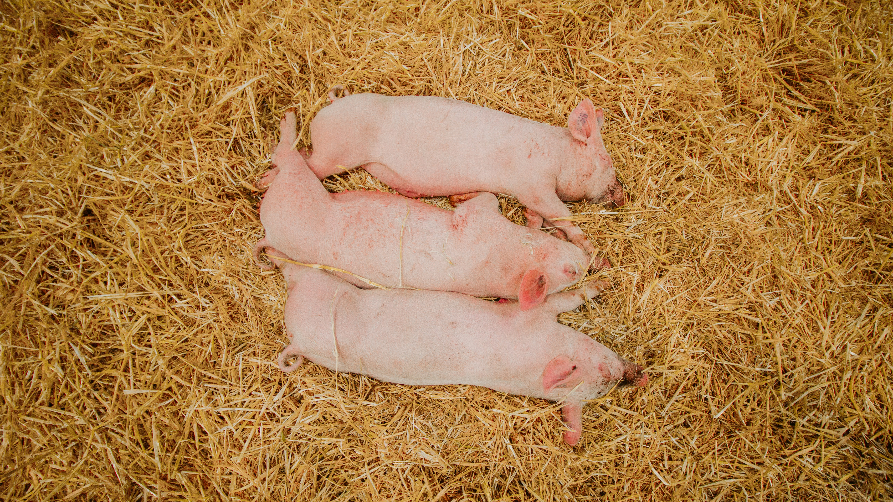
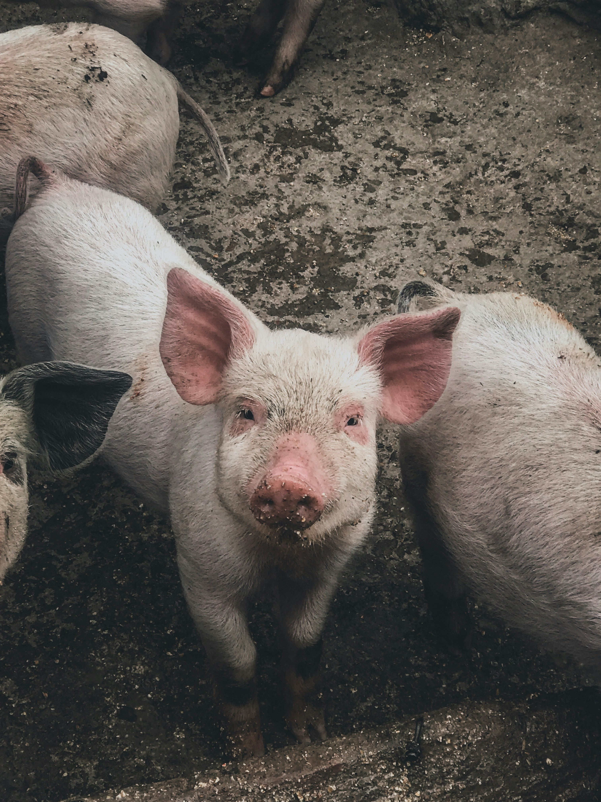
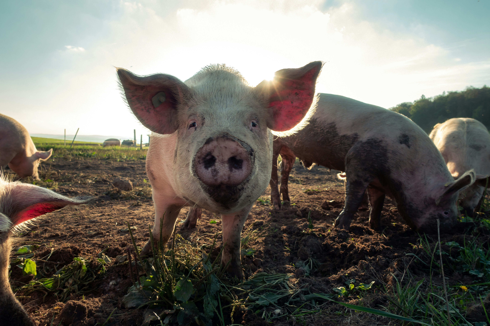
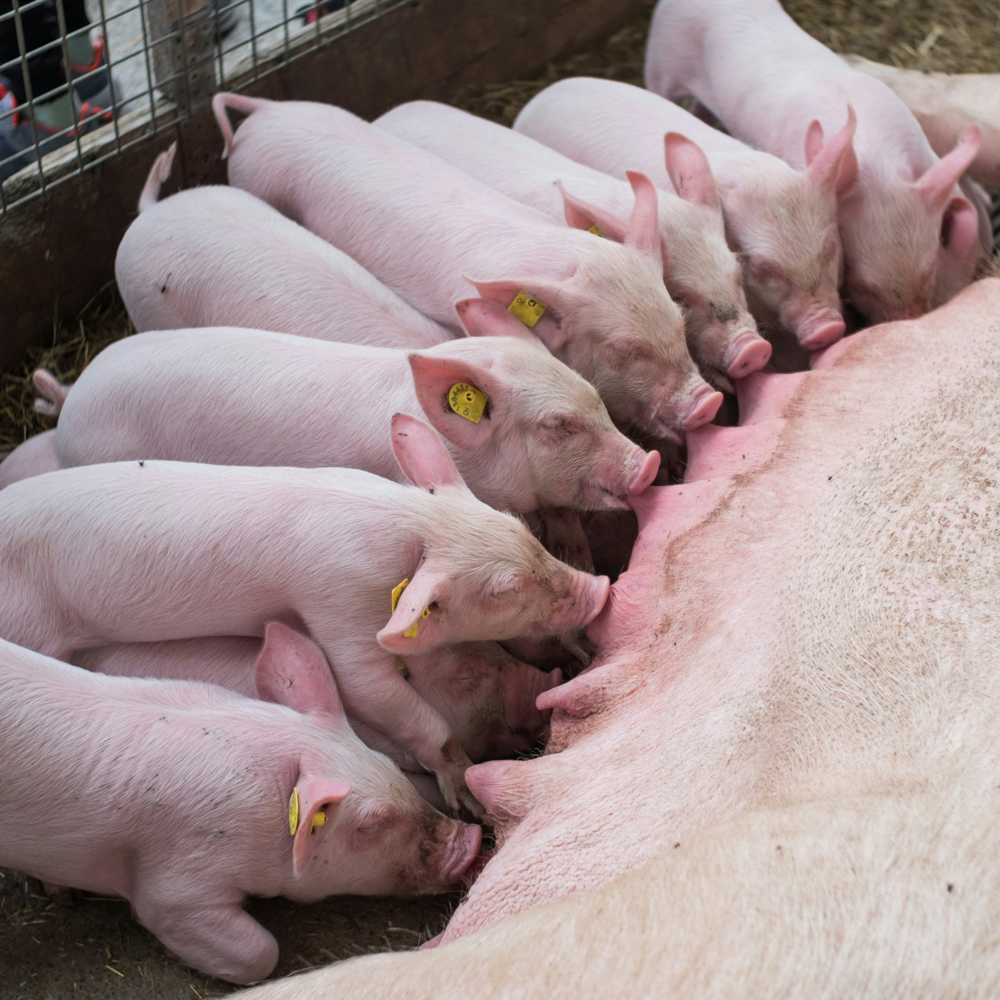
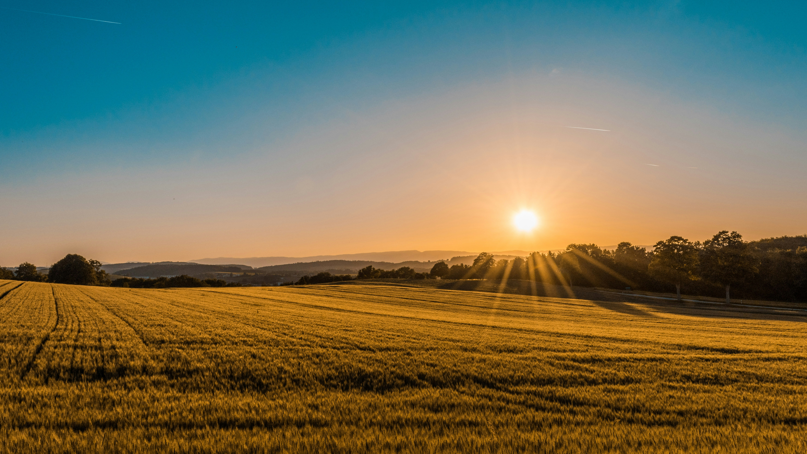

Manejo no Escamoteador
Içamento seguro no processamento e vacinação, aproximando os animais do corpo para proteger a coluna lombar.
“Onde o cuidado encontra a inovação, o movimento se transforma em saúde.”
Este site foi desenvolvido para promover mais saúde, segurança e qualidade de vida no ambiente de trabalho, por meio de orientações simples e acessíveis. A plataforma reúne informações sobre postura, prevenção de dores, exercícios, alongamentos, pausas ativas e movimentação de cargas, ajudando os trabalhadores a cuidar melhor do corpo.

A ergonomia busca tornar o trabalho mais seguro, confortável e adequado às necessidades do trabalhador.
Por meio de cuidados com a postura, movimentos, organization das atividades, pausas e uso correto dos equipamentos, é possível reduzir sobrecargas, prevenir dores e contribuir para mais saúde e qualidade de vida durante a jornada de trabalho.
Adequação física aos processos de parto, medicação de leitões e desmame.
Redução drástica de sobrecargas e dores na coluna lombar e joelhos.
Manutenção da integridade física com aumento de produtividade e bem-estar.
Clique nos pinos interativos sobre a imagem ou nos botões laterais para visualizar as orientações ergonômicas da rotina com os animais.

A contenção e medicação de leitões exigem flexão da coluna lombar. Mantenha o corpo próximo à baia, flexione os joelhos e evite torções.
A preservação da saúde postural do trabalhador em cada etapa da produção.

Içamento seguro no processamento e vacinação, aproximando os animais do corpo para proteger a coluna lombar.

Mantenha os joelhos flexionados e utilize apoio adequado ao inspecionar as matrizes e leitões lactantes.

Postura ereta e passos firmes durante o monitoramento da granja e instalações a céu aberto.
Selecione uma categoria abaixo para conferir as técnicas de descompressão muscular.
Faça uma parada curta durante a jornada para executar os alongamentos recomendados.